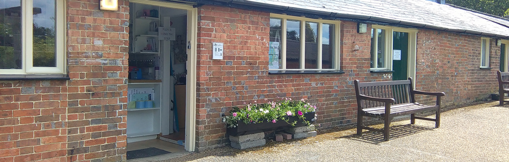
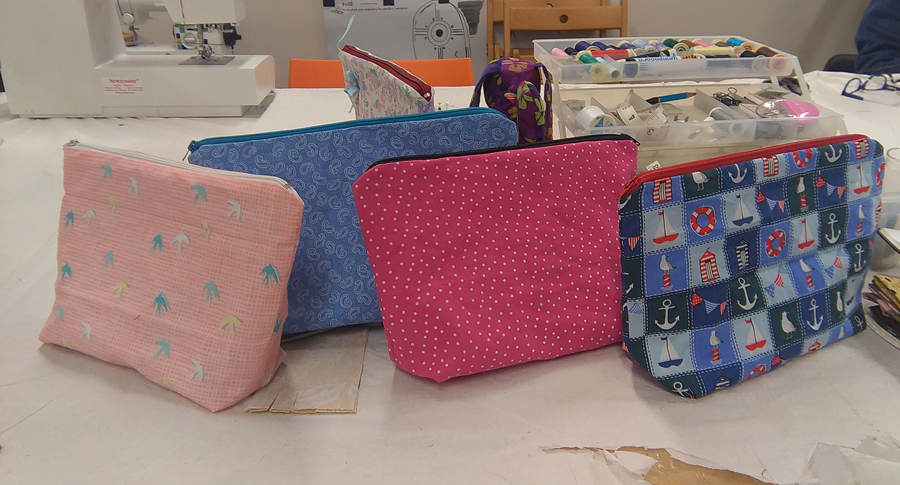

Keep On Sewing ...
Home


- 
Welcome to Sew'n'Beads.
We are a small business in the Crawley area specialising in all types of sewing classes and workshops. From dressmaking, quilting and cushions to handbags, shopping bags and toys.
If you can think of it, we can teach you how to make it!
Sewing classes are available for both adults and children.
Fashion Show at Sew'n'Beads. All welcome!

Sewing Is Great at Sew'n'Beads!
